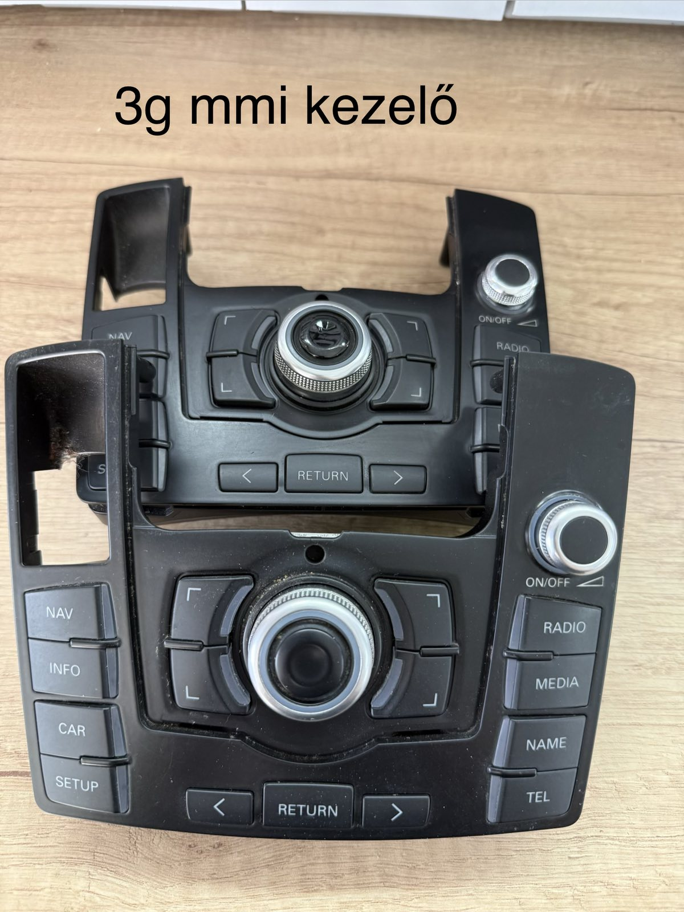
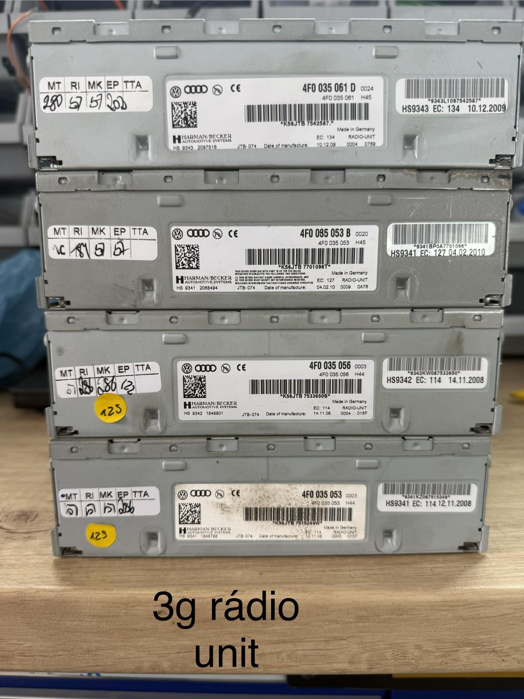
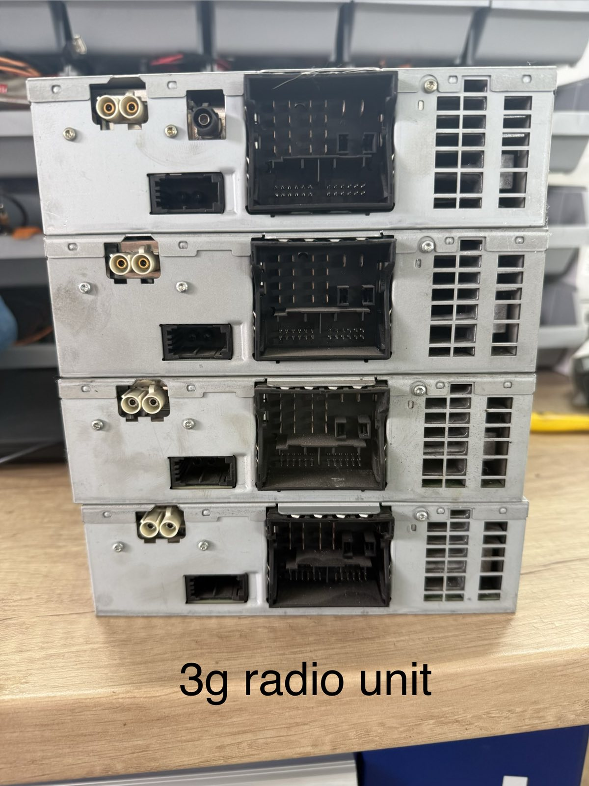
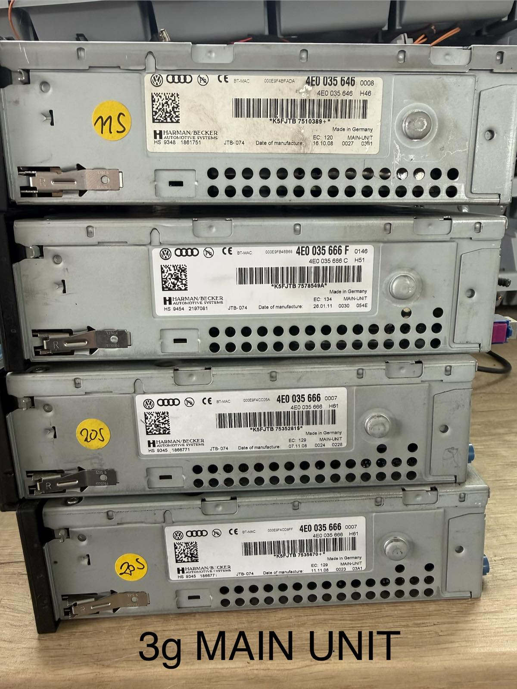
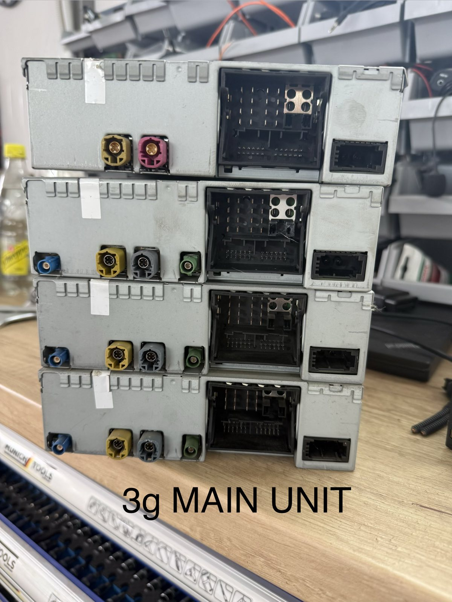

MMI KEZELŐ
MMI 3G kezelő
Gyári Audi MMI 3G középkonzol kezelőegység.
Aktuálisan elérhető használt MMI 3G alkatrészek. Érdeklődésnél a képen látható cikkszámot add meg.

Gyári Audi MMI 3G középkonzol kezelőegység.

Több gyári cikkszám és kivitel.

Csatlakozók és kivitelek összehasonlításához.

Több gyári Audi Main Unit egység.

Eltérő csatlakozó-kiosztású egységek.